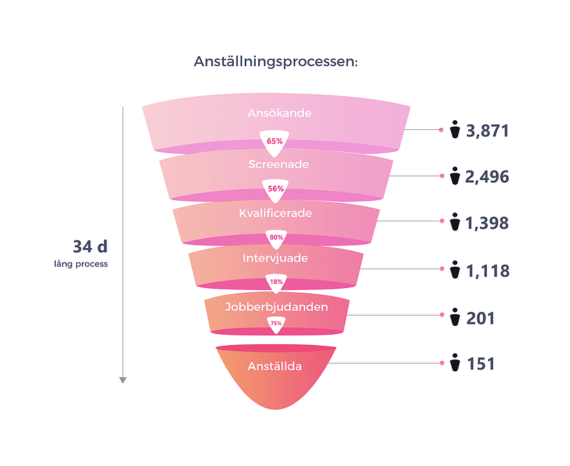

Det sägs att den genomsnittliga internetanvändaren har mer än fem konton på sociala medier. Därför har sociala medier blivit ett kraftfullt verktyg för företag att nå kvalificerade kandidater. Att effektivt etablera ert företag inom sociala nätverk ger en positiv bild av företaget och gör att potentiella kandidater med större sannolikhet vill ansluta sig till er.
Social rekrytering är en av de strategier ni kan använda er av för att hitta de bästa kandidaterna. Det är dock mycket viktigt att företaget först utbildar sig om hur rekryteringsprocessen via sociala medier fungerar och hur den kan optimeras. Därefter kan ni upprätta en träffsäker digital rekryteringsstrategi och nå kandidater i olika kanaler. Med sociala medier kan ni dramatiskt förbättra och snabba på er rekryteringsprocess.
Vilka är de typiska stegen i rekryteringsprocessen?
Anställningsprocessen börjar när ett företag identifierar behovet av att fylla en position och slutar när en kandidat accepterar ett jobberbjudande. De typiska stegen i rekryterings- och urvalsprocessen varierar beroende på roll och företag, men de flesta rekryteringsteam och anställningsgrupper bygger sin anställningsprocess kring dessa tre steg:
Planering
Den rekryterande chefen planerar rekryteringen och gör en budget för anställningsprocessen. I det här steget samlas vanligtvis en anställningsgrupp som tar fram en arbetsbeskrivning/rollbeskrivning och en kandidats önskade kvalifikationer. Många företag väljer även att tidigt anlita en rekryteringsbyrå för att hjälpa till med rekryteringen.
Locka kandidater
Online-rekrytering handlar om nå kvalitativa kandidater via sociala medier och att sedan locka till sig dem. Just att locka till sig kandidater är det steg där sociala medier kan hjälpa ert företag allra mest. Idag är en rekryteringsstrategi för sociala medier är ett måste. Webbplatser som LinkedIn, Facebook, Twitter och en handfull andra plattformar erbjuder rekryterare en enorm möjlighet att hitta kandidater. Ni når många personer som aldrig skulle ha sökt jobbet via traditionella kanaler, exempelvis via jobbannonser i dagspressen.
Välja kandidater
Sökande
Att ni har tillräckligt många sökande att välja bland är viktigt, men ännu viktigare är det att dessa håller hög kvalitet. Sociala medier kan hjälpa ert företag att hitta mer kvalificerade kandidater, då ni bland annat når kvalificerade personer som inte är aktivt jobbsökande.
Det Amerikanska företaget Visier gjorde 2015 en analys av en en större kunds kandiatflöde. Utav de närmre 4000 som ansökte var det endast 201 som fick ett jobberbjudande, d.v.s. endast 5% av de ansökande! Tyvärr är detta lika sant för små bolag som stora. Med hjälp av annonsering i sociala medier kan man lättare nå de mest kvalificerade kandidaterna direkt.
Testade/kvalificerade
Det stora grovjobbet är att hitta de kandidater som är kvalificerade för jobbet. Den processen kan gå till på lite olika sätt. Många företag väljer att först göra en så kallad screening, ett test av något slag (personlighetstest, intelligenstest, arbetsprov etc.). Andra företag gör en manuell genomgång av kandidaterna och läser de personliga breven först.
Intervjuer
När anställningsgruppen kommit överens om de mest kvalificerade personerna kallas några eller alla av dem till en intervju. Intervjun är den viktigaste delen av urvalsprocessen, medan screening, genomgång av ansökningar och kontakt med kandidaterna tillsammans bidrar till att anställningsgruppen intervjuar de bästa kandidaterna.
Jobberbjudande
Den mest attraktiva kandidaten väljs ut och löneanspråk, förmåner, anställningsstart med mera diskuteras. Innan jobbet erbjuds till en kandidat bör anställningsgruppen ta referenser och kontakta dessa.
Positionen tillsatt
Förhoppningsvis blev det en lyckad rekrytering med rätt person på rätt plats.
Hitta kvalificerade kandidater snabbare via sociala medier och förkorta rekryteringsprocessen
Urvalsprocessen kan börja när företaget bedömer att de har tillräckligt många kvalificerade kandidater att välja på. Hur många personer det rör sig om kan variera utifrån företag och befattning. Vid mer nischade positioner krävs det färre kandidater och vid mindre kvalificerade positioner kan det vara en fördel att ha många att välja på.
Varför sociala medier leder till fler kvalificerade kandidater
Sociala medier är ett kraftfullt verktyg för rekryterare att nå en stor mängd kvalificerade kandidater. Eftersom människor är de allra flesta företags största tillgång, är det viktigt att hitta ett sätt att få de bästa personerna inom er bransch att vilja jobba för er. Social rekrytering sätter er organisation i kontakt med de kandidater som ni troligtvis inte skulle nå via en traditionell rekryteringsprocess. Att etablera ert företag inom sociala näteverk ger även en positiv bild av ert företag.
Det betyder inte att ni bör förflytta hela rekryteringsprocessen till sociala medier. Ni bör istället lära er att utnyttja dessa nya verktyg och använda dem för att förbättra ert resultat.
Genom sociala medier kan ni:
- Korta ner rekryteringstiden. Att rekrytera via sociala medier minskar tiden och leder till en mer kvalificerad process. Genom att aktivt selektera vilka personer ert företag vill nå med annonsfilter, kan ni välja att bara visa jobbannonsen för en utvald grupp. Dessa filter kan vara allt från ålder och intressen, till geografisk placering och konkurrerande företag. Utöver det öppnar sociala kanaler upp för bättre och mer effektiv kommunikation med blivande kandidater. Ju mer ert företag har öppnat upp för en digital anställningsprocess – desto snabbare kommer ni att ha positionen tillsatt.
- Hitta kandidater som inte aktivt söker jobb. När konkurrensen om de bästa talangerna är stenhård kan det vara utmanande att locka till sig de bästa. Sociala nätverk erbjuder möjligheten att nå ut till passiva kandidater eller kandidater som sannolikt inte skulle nås via andra kanaler.
- Nå kandidater av högre kvalitet. Personer som ofta använder sociala nätverk tenderar att vara "early adopters" av innovation och även mer tekniskt kunniga.
- Få era befintliga anställda engagerade i rekryteringsprocessen. Nöjda anställda kommer att aktivt delta i företagets rekryteringsprocess om ni låter dem. Genom att företagets medarbetare delar jobbannonser och information om ert företag på sina sociala medier ökar sannolikheten för att ni når fler kvalificerade kandidater – och det minskar även kostnaderna för annonser.
- Minska rekryteringskostnaderna. Ni kan drastiskt minska kostnaderna och genom att rekrytera via sociala nätverk. Att skicka och dela jobbannonser via Facebook eller LinkedIn ger med större sannolikhet bättre resultat än en jobbannons i tidningen, vilket innebär att det potentiella värdet överstiger kostnaden avsevärt.
- Vara en arbetsgivare som kandidaterna väljer och inte tvärt om. När ert företag etablerar er online-närvaro skickar ni en positiv signal till potentiella kandidater. Att vara en arbetsgivare som kandidaterna väljer innebär att de vill arbeta för dig och dessutom är beredda att sprida det meddelandet över sina sociala nätverk.
Det här inlägget är skapat av Adways marknadschef, Victor. Vill du lära dig mer om rekrytering via social media? Skriv upp dig på vårt nyhetsbrev, slå en signal till någon av mina medarbetare, eller besök www.adway.ai